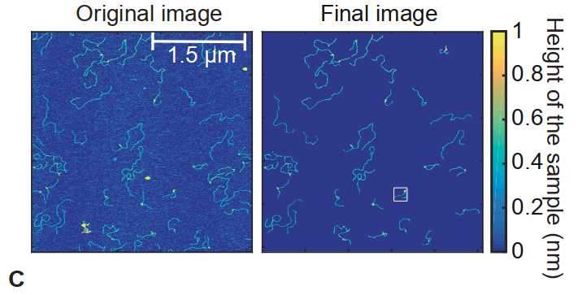
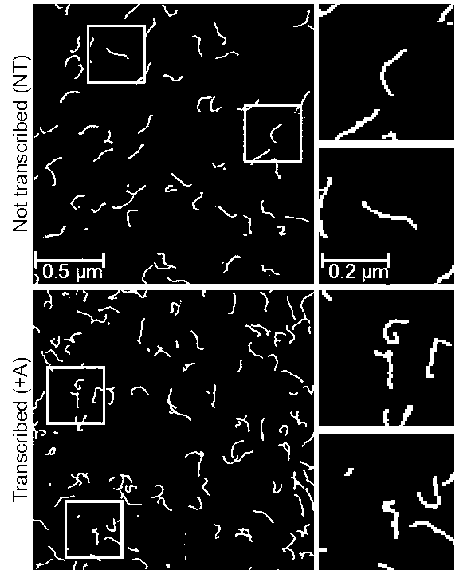
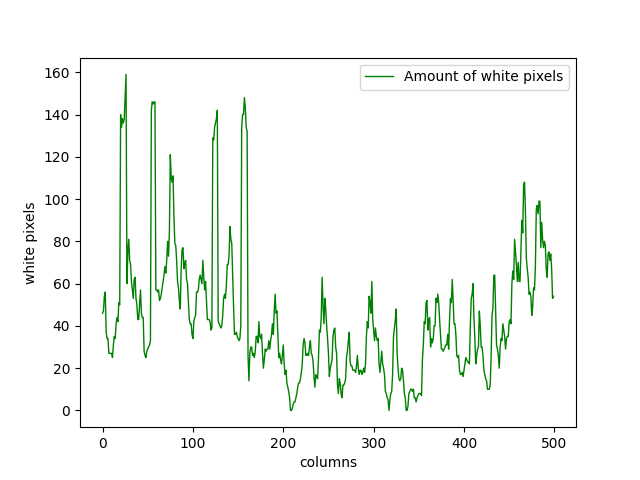
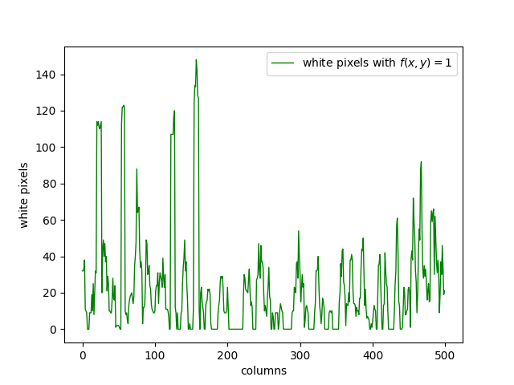
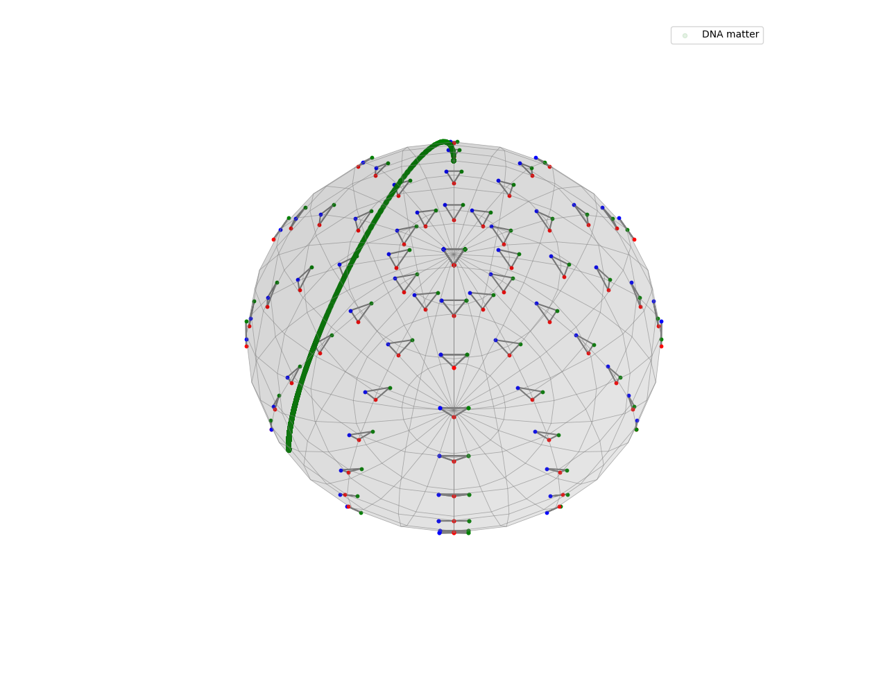
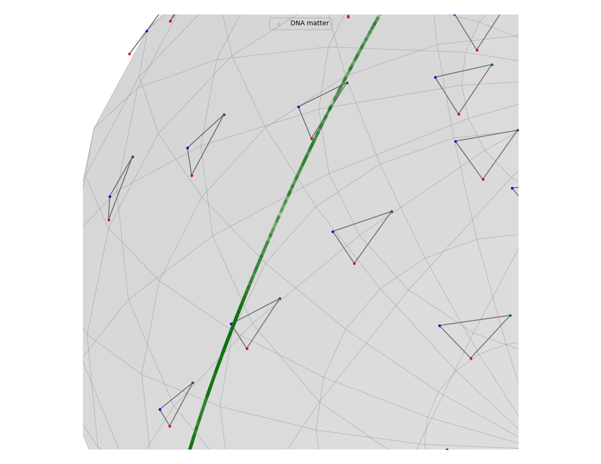
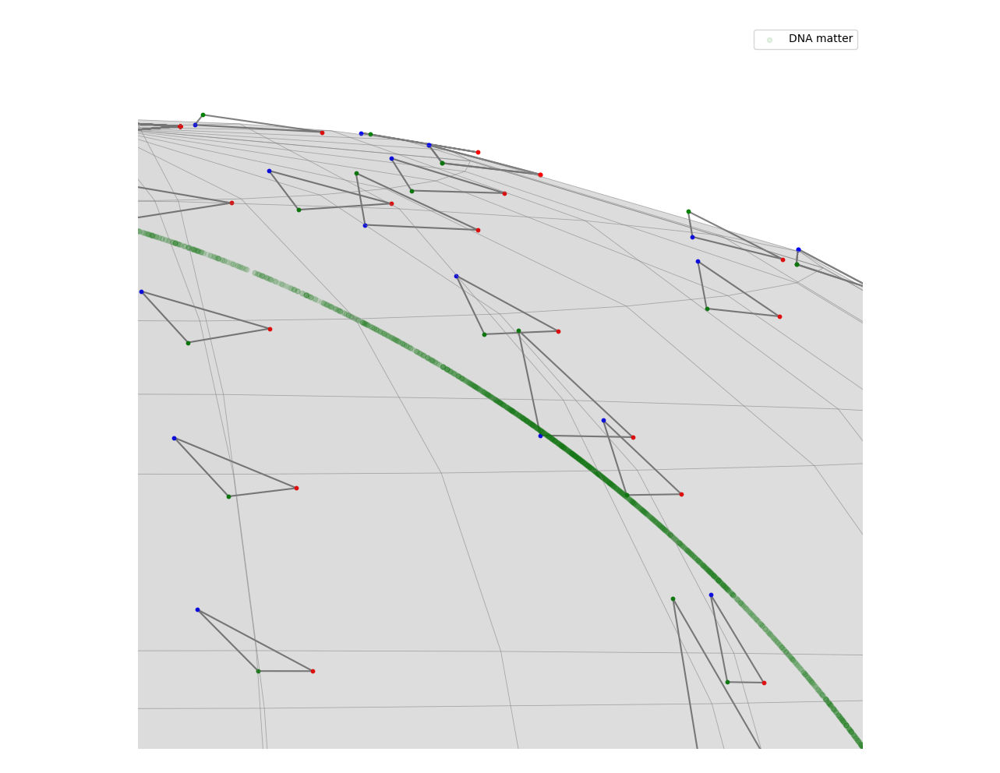
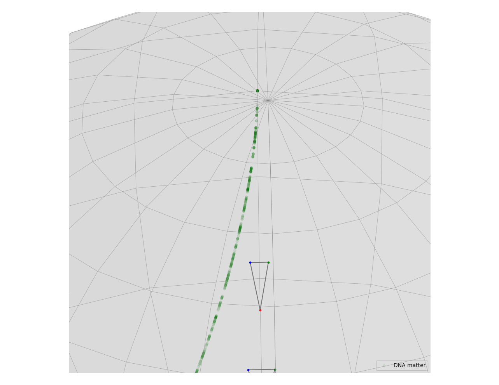
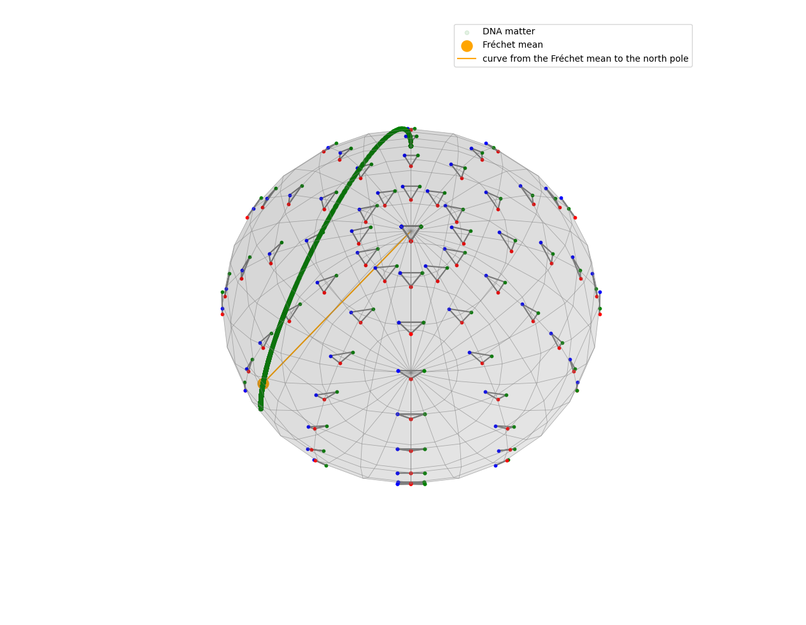

import numpy as np
import matplotlib.pyplot as plt
import geomstats.backend as gs
gs.random.seed(2024)Context and motivation
R-loops are three-stranded nucleic acid structures containing a DNA:RNA hybrid and an associated single DNA strand. They are normally created when DNA and RNA interact throughout the lifespan of a cell. Although their existence can be beneficial to a cell, an excessive formation of these objects is commonly associated with instability phenotypes.
The role of R-loop structures on genome stability is still not completely determined. The determining characteristics of harmful R-loops still remain to be defined. Their architecture is not very well-known either, and they are normally classified manually.
In this blog post, we will carry AFM data to the Kernell shape space and try to develop a method to detect and classify these objects using geomstats (Miolane et al. 2024). We will also talk about a rather simple method that works reasonably well.

Preparations before data analysis
Original images will be edited to remove background noise. The figure below from the reference article tries to do that while maintaining some colors. This is useful to track the height of a particular spot.

I went a step further and turned these images into binary images. In other words, images we will use here will consist of black and white pixels, which correspond to 0 and 1 respectively. This makes coding a bit easier, but the height data (or the \(z\) coordinate) will need to be stored in a different matrix.

We first import the necessary libraries.
We process our data and put it into matrices.
data_original = plt.imread("original-data.png")
data = plt.imread("edited-data.png")
x_values = []
y_values = []
z_values = []
data_points = []
for i,rows in enumerate(data_original):
for j,rgb in enumerate(rows):
if not (rgb[0]*255 < 166 and rgb[0]*255 > 162):
continue
if not (rgb[1]*255 < 162 and rgb[1]*255 > 167):
continue
if not (rgb[2]*255 < 66 and rgb[1]*255 > 61):
continue
# store useful height data
z_values.append((i,j,rgb[0], rgb[1], rgb[2]))
for i,rows in enumerate(data):
for j,entry in enumerate(rows):
# take white pixels only (entry is a numpy array)
if (entry.all() == 1):
y_values.append(j+1)
x_values.append(i+1)
data_points.append([i,j])A primitive approach that surprisingly works
A way to distinguish lines from loops is to count the amount of white pixels in each column. This heavily depends on the orientation. To get a meaningful result, it is required to do this at least \(2\) times, one for columns and one for rows. This is not bulletproof and will sometimes give false positives. However, it still gives us a good idea of possible places where there is an R-loop.
white_pixel_counts = [i*0 for i in range(500)]
data = plt.imread("data-1.png")
for i,rows in enumerate(data):
for j,entry in enumerate(rows):
# count white pixels only
if (entry.all() == 1):
white_pixel_counts[j] += 1
plt.plot(range(500), white_pixel_counts, linewidth=1, color="g")
plt.xlabel("columns")
plt.ylabel("white pixels")
plt.legend(["Amount of white pixels"])
plt.show()
We can see that in Figure \(1\), the R-loops are mainly accumulated on the left side. There are a considerable amount of them on the right side as well. There are some of them around the middle, but their numbers are lower. We can see that this is clearly represented in Figure \(4\).
With this approach, \(2\) different white pixels in the same column will always be counted even if they are not connected at all, which gives us some false positives. To avoid this issue, we can define the following function taking the position of a white pixel as its input.
\[ f((x,y)) = \left\lbrace \begin{array}{r l}1, & \text{if} ~~ \exists c_1,c_2,c_3,\dots c_{\gamma} \in [y-\epsilon, y+\epsilon] ~~ \ni f(x,y) = 1 \\0, & \text{otherwise}\end{array} \right.\]
\(\epsilon\) and \(\gamma\) can be adjusted depending on the data at hand. This gives us a more precise prediction about likely places for an R-loop. In this case, choosing \(\gamma = 8\) and \(\epsilon = 10\) gives us the following graph.

We can see that the Figure \(5\) and \(4\) is quite similar. The columns where the graph peaks are still the same, but we see a decrease in the values between these peaks, which is the expected result. This figure has less false positives compared to the previous one, so it is a step in the right direction.
An analysis using the Kendall pre-shape space
Initialize the space and the metric on it. Create a Kendall sphere using geomstats.
from geomstats.geometry.pre_shape import PreShapeSpace, PreShapeMetric
from geomstats.visualization.pre_shape import KendallSphere
S_32 = PreShapeSpace(3,2)
S_32.equip_with_group_action("rotations")
S_32.equip_with_quotient()
metric = PreShapeMetric(space=S_32)
S_32.metric = metric
projected_points = S_32.projection(gs.array(data_points))
S = KendallSphere()
S.draw()
S.add_points(projected_points)
S.draw_points(alpha=0.1, color="green", label="DNA matter")
S.ax.legend()
plt.show()
Taking a close look at it will reveal more details about where the points lie in the space.

The upper part of the curve consist of points that are in the left side of the image while the one below are closer to the middle. We see a reverse relationship between the amount of R-loops and the density of these points. This is an expected result when we consider how the Kendall pre-shape space is defined.
A pre-shape space is a hypersphere. In our case, it has dimension \(3\). Hypothetically, if all of our points were placed at the vertices of a triangle of similar length, their projection to the Kendall pre-shape space would be approximately a single point. In the case of circular objects, there will be multiple pairs of points that are the same distance away from each other more than we would see if the object was a straight line. Therefore, we expect points forming a loop (which is a deformed circle for our purposes) to be separated from the other points. In other words, the lower-density areas in the hypersphere correspond to areas with a higher likelihood of R-loop presence.
The presence of more R-loops does not indicate that there will be fewer points in the corresponding area of the pre-shape space. It just means that they are further apart and more uniformly spread.

Points in the pre-shape space give us possible regions where we may find R-loops. However, they do not guarantee that there will be one in that location. This is evident when we look at the right end of this curve. It has a lower density of points than the left side, which is a result we did not want to see.

This happens because there are more DNA fragments on the right side with a shape similar to a half circle. Most of them are not loops, but they are distinct enough from the rest that the corresponding projection in the pre-shape space has a low density of points, which are separated from the rest.
We can also take a look at the Fréchet mean of the projected points in the pre-shape space.
projected_points = S_32.projection(gs.array(data_points))
S = KendallSphere(coords_type="extrinsic")
S.draw()
S.add_points(projected_points)
S.draw_points(alpha=0.1, color="green", label="DNA matter")
S.clear_points()
estimator = FrechetMean(S_32)
estimator.fit(projected_points)
S.add_points(estimator.estimate_)
S.draw_points(color="orange", label="Fréchet mean", s=150)
S.add_points(gs.array(S.pole))
S.draw_curve(color="orange", label="curve from the Fréchet mean to the north pole")
S.ax.legend()
plt.show()
The point we find is located around the left side of the green curve, which is a result we already expected.
References
Carrasco-Salas, Yeraldinne, Amélie Malapert, Shaheen Sulthana, Bastien Molcrette, Léa Chazot-Franguiadakis, Pascal Bernard, Frédéric Chédin, Cendrine Faivre-Moskalenko, and Vincent Vanoosthuyse. 2019. “The Extruded Non-Template Strand Determines the Architecture of r-Loops.” Nucleic Acids Research 47 (13): 6783–95.
Miolane, Nina, Luís F. Pereira, Saiteja Utpala, Nicolas Guigui, Alice Le Brigant, Hzaatiti, Yann Cabanes, et al. 2024. “Geomstats/Geomstats: Geomstats V2.8.0.” Zenodo. https://doi.org/10.5281/zenodo.13737807.